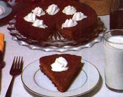

Back in 1936-in the middle of the Great Depression-a great many folks found it extremely difficult to put their hands on such natural edibles as eggs and milk . . . let alone the overpriced, refined, store-bought, hardly-nourishing-at-all, processed foods that far too many people consume far too much of these days.
It (1936) was a time, in short, when inventive cooks-out of necessity-discovered a tremendous number of ways to stretch a very few inexpensive, "down-home" ingredients into nutritious, economical, and mouthwatering "works of art" that you just can't hardly find anymore.
I recently discovered the formula for one of these treasures while rummaging around in the back of my grandmother's cupboard. It's a terrific recipe for Bread Crumb Molasses Cake, it was originally published in the Detroit Free Press in 1936, and it's both much tastier and much more healthful than the dead, chemical-laced, prepared desserts sold down in the local supermarket. Besides that, it uses hardly any ingredients at all . . . and the few it does call for will cost you practically nothing!
First, put three tablespoons of bacon fat (butter will work too, if you prefer) into a bowl and melt the shortening by pouring three-quarters of a cup of boiling water over it. Next pour in one cup of molasses (which already contains one teaspoon of stirred-in baking soda) and then add three-fourths of a cup of dried bread crumbs (I use whole wheat) and one-half cup of raisins. Finally, dump in one cup of whole wheat flour, three-fourths teaspoon of salt, and two teaspoons of powdered ginger. (I also like to add one-fourth cup of wheat germ, even though it wasn't called for in the original recipe.)
Mix everything together well and bake the batter in a lightly greased loaf pan at 325°F for about forty minutes (or for thirty minutes at the same temperature if you use a layer cake pan). The old "clean knife trick"when a knife is stuck into the baking cake and pulls out clean, the cake is donewill tell you exactly when to take this delicious treat out of the oven, if you have any further questions about timing.
Mercy! Is this ever a way to indulge the of sweet tooth without consuming a single grain of refined sugar, bleached flour, or chemical additives. Believe me: This dark, heavy, moist, sweet (but not too sweet) bread/cake is almost sinfully good. Serve it up cold and plain, or either hot or cold and topped with fresh whipped cream, or hot with butter melted over it . . . and just see if you don't agree!
MOTHER'S NOTE: Susan Killian, one of my official food testers and tasters, whipped up Cathy Gram's 1936 recipe before this article went to press ... and everyone who had a chance to "dig into" the resulting Bread Crumb Molasses Cake agrees: This is the greatest! The cake is extremely inexpensive and easy to make. It's very moist and tasty. And we think it'll keep well ... but we've never had a chance to prove that yet!
|
 |
|
|